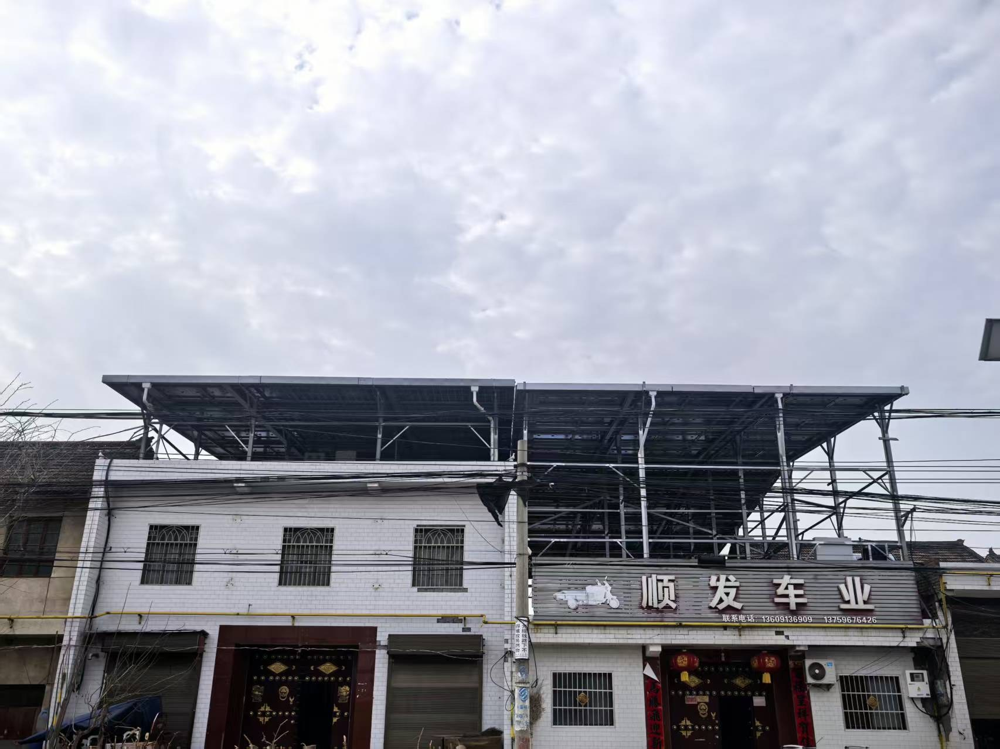
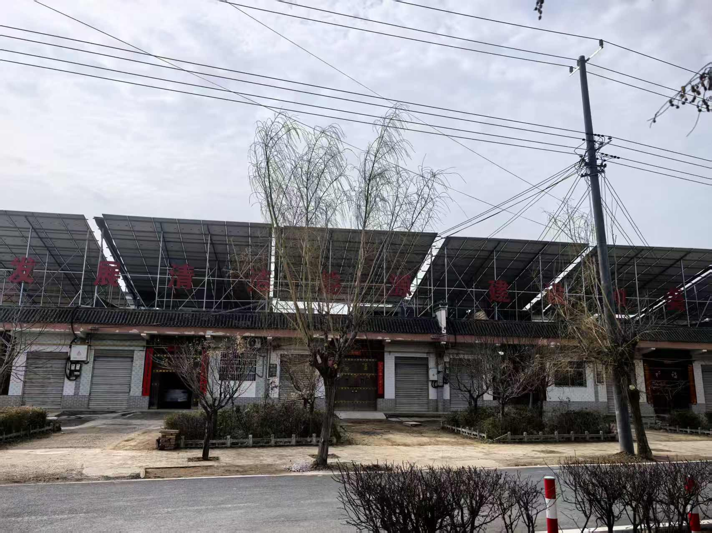
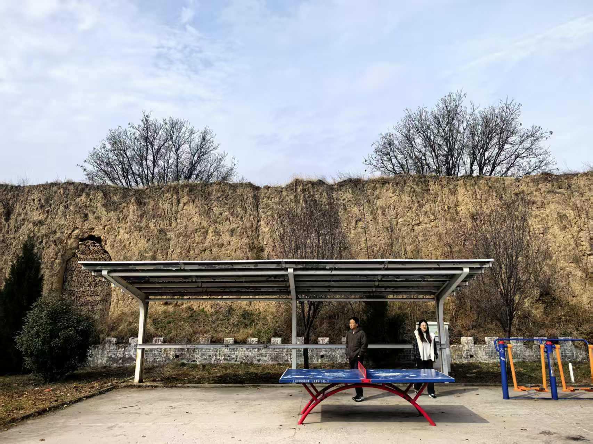
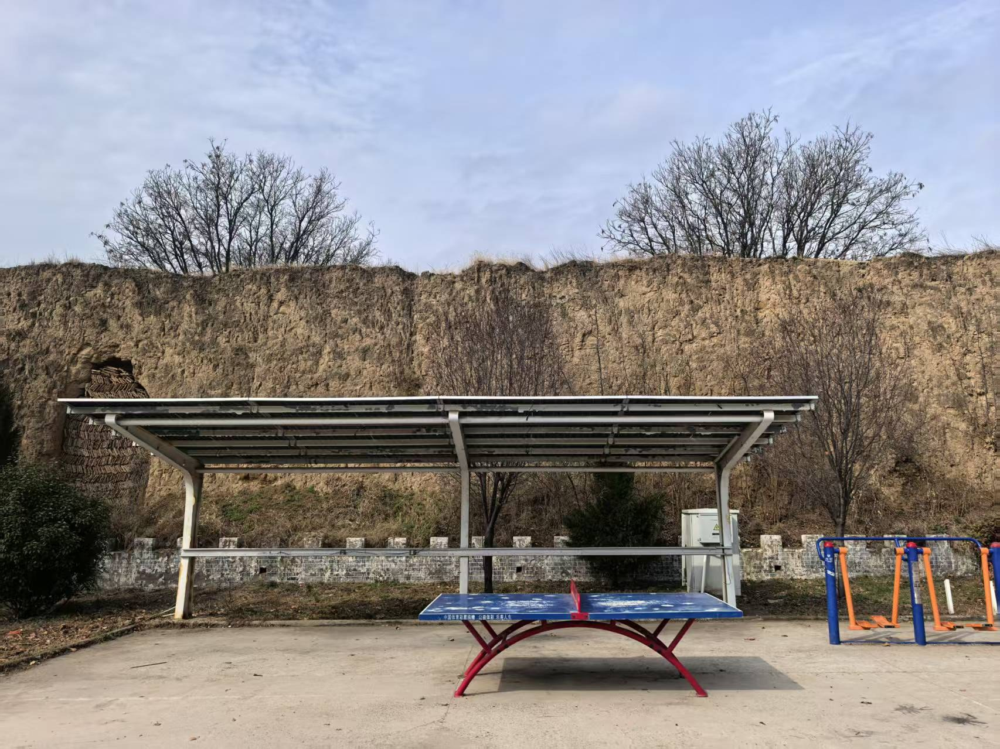
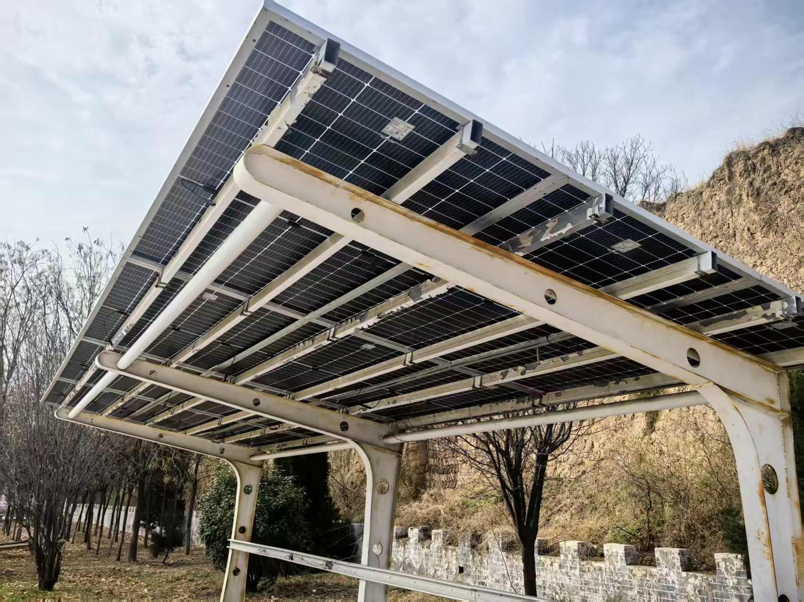
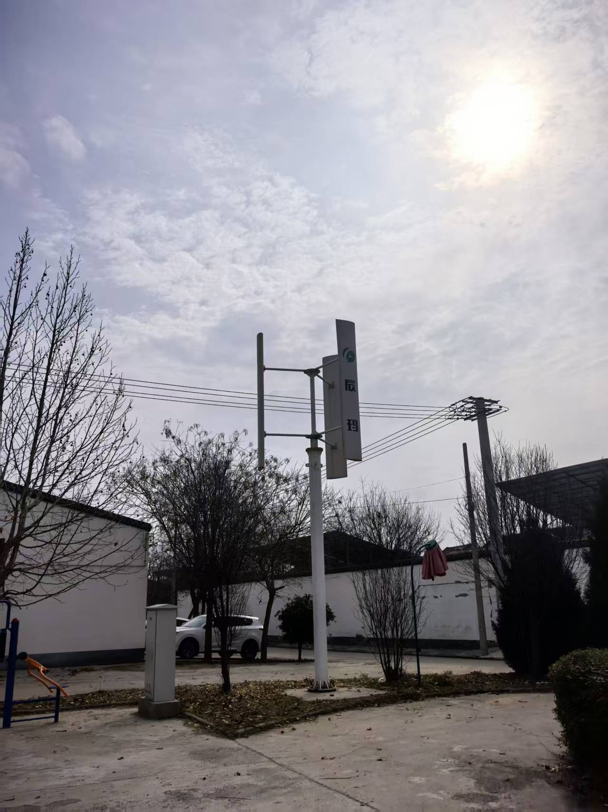

陕西省渭南市大荔县段家镇东高垣村——185 户整村光伏实践全记录。本页全部数据来源：课题组 2025 年 7 月首次驻村、2026 年 2 月驻点调研与企业访谈；全县口径数据单独标注。
点击任意条目展开详细数据。
低价收屋顶（一块板一年 15—20 元）、骗取身份证信息办贷款，仅六七户安装，村民普遍抵触。
大荔县纳入国家整县屋顶分布式光伏开发试点名单，县级红头文件逐级下发。
县级统一招标，H 光伏公司（省属国企）中标；党员干部带头，样板户首批安装。
陕西省整县试点现场会在大荔召开，东高垣村为 3 个示范村之一，是 3 家中标单位中唯一会前并网发电的项目。
整村签约装机 5.963 MW，户均约 32 kW。
电价市场化，全县新增并网放缓至 116 户（大荔县全县（含东高垣村），截至 2025 年 7—8 月企业台账）。
网格化驿站＋三级工单，「小故障不过夜」。
3 人约 1 周每日进村入户，发现并命名「光伏养老」机制。
朱砂色节点为警示事件。
全县 9 项核心指标映射为地形高度——山峰越高，数值越大。悬停山峰查看数据卡，拖拽旋转地形。
数据口径：大荔县全县（含东高垣村），截至 2025 年 7—8 月企业台账；东高垣村口径数据单独标注。
案例全部出自《建设手册》第六篇案例库，人物按调研规范匿名化（W 某、H 某）。
6 张照片均为课题组驻点调研期间实地拍摄，已按调研规范做转正与脱敏处理；仅用于案例档案展示，完全离线。






信用不足的地区先用制度补信用：统一招标、国企背书、合同备案缺一不可。
户均年租金约 1500—2000 元，是锦上添花而非致富主力，宣传必须克制。
装机天花板不在屋顶、不在意愿，而在变压器；容量核算必须前置。
规模化后停机、漏水、纠纷显性化，三级工单体系必须先行。
租金无需劳动、长期稳定、直达账户，恰好补齐农村养老短板。